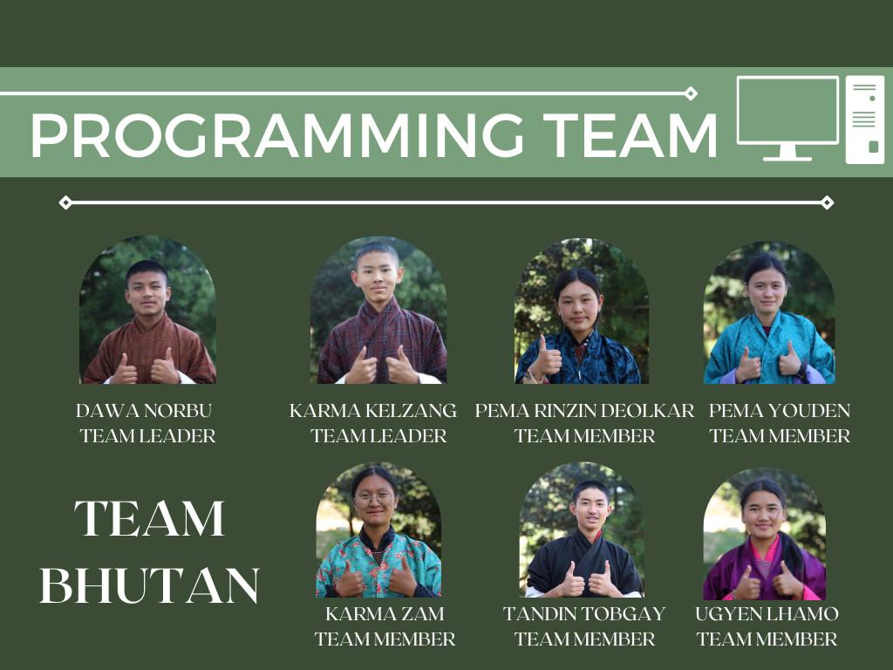
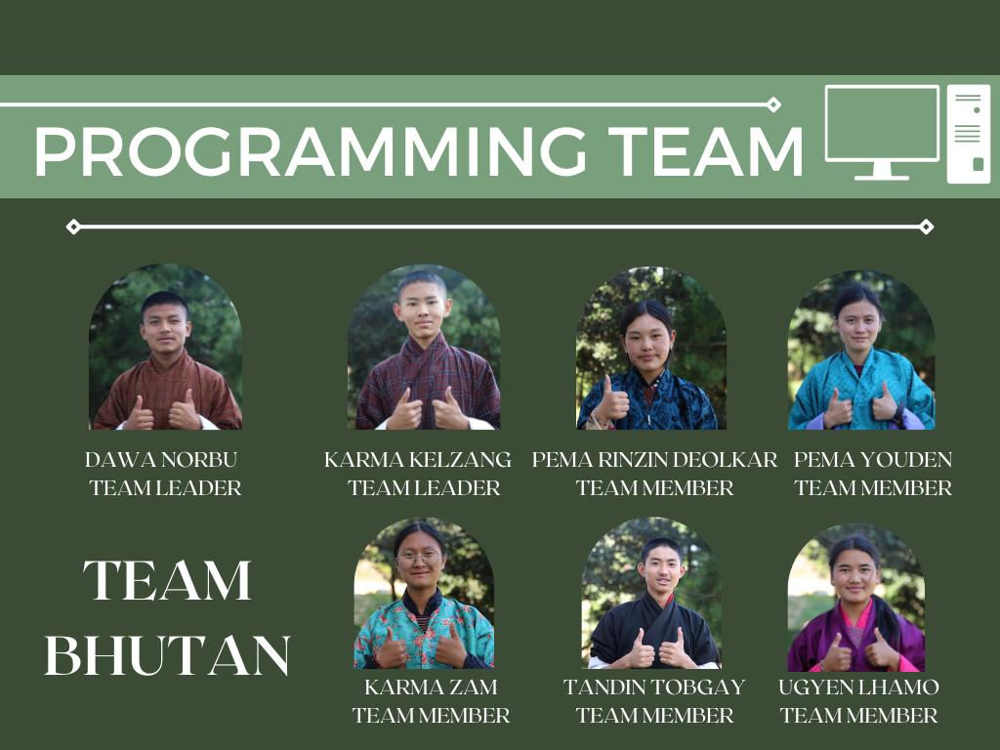

Hello, I'm Pema,
Software
Engineering
Student
based in Phuentsholing, Bhutan.

Hello, I'm Pema,
based in Phuentsholing, Bhutan.
I have a strong skill-based foundation from high school and have been deeply engaged in my college studies in software engineering. I enjoy building functional, user-friendly websites and solving complex problems through code. Throughout my education, I have gained hands-on experience with programming, data structures, and computer networking, and I'm always eager to apply what I've learned to real-world projects.
Sept 2023 – Oct 2023
E-yantra was my first major project, which I took part in back in 2021 when I was in the 9th grade. At that time, ChatGPT didn’t exist, and that was when we truly discovered our own potential and how dedicated we could be. Our team of four participated in the E-yantra Robotics Competition organized by E-yantra, based in India. We were required to program, present our ideas, and submit our projects online.

Guided by our teachers, we explored Python on our own, experimenting with new methods and learning how different programming concepts could be implemented. We even used the Turtle library to create drawings through code. By the end of the competition, our team was honored to be ranked among the top 16 teams, and we received honorable mentions from the organizers.
May 2023 – June 2023


Back in high school, I was part of the Space and Technology Internship Program for two years. Through this program, we learned various extracurricular skills such as telescope handling, using Fab Lab technologies and machinery, and exploring ideas related to space. We often organized stargazing events where we set up telescopes for other students to observe the night sky. After learning from our seniors, we also taught younger students how telescopes work and the mechanisms behind them. As we progressed, we continued this tradition passing down the skills and knowledge we had gained to new members of the program, just as our seniors had done for us.
Oct 2021 – Jan 2022
 

The FIRST Global Competition was something entirely new to me, I had never heard of it before, even though I was always deeply involved in extracurricular activities. It was my first time learning about such an international event, and I was truly honored to be part of the non-traveling team, supporting the main team that represented Bhutan in Singapore.
Within the team, we were divided into several groups, such as construction, multimedia, and programming. I was a member of the programming group, where I contributed my skills and knowledge to help our team grow and improve. Even though I wasn’t among those who travelled, I felt proud knowing that my efforts played a small part in something much bigger—helping my friends represent Bhutan on a global stage.
Contributed to the successful upgrade and installation of the PANOPTES astronomical telescope units as part of a collaborative project involving international experts and local educational institutions.


Engaged in the assembly, modification, and testing of hardware components including camera and control boxes. Participated in software configuration and communication setup to optimize telescope functionality.
This experience enhanced technical skills in telescope instrumentation and teamwork in a multidisciplinary environment.

My participation in the Fab Lab is one of the achievements I am truly proud of from my high school years. Being part of the Fab Lab management team was not only an honor but also an experience that shaped me into the person I am today. Through the Fab Lab, I learned to operate various types of machinery from teachers, peers, and online resources, and I was always eager to share that knowledge by teaching my juniors.
I was among the students who excelled in handling most of the Fab Lab equipment. Over time, I completed several projects using its machines—one of them was creating an Eiffel Tower model for my mathematics project on integral calculus, using laser cutting technology. I also contributed to the crawler drone project through 3D printing and Shop-Bot circuit board fabrication. Beyond that, I helped redesign the Fab Lab space, applying my skills in 3D design, and explored other creative processes such as t-shirt designing and sticker printing.


My portfolio offers an array of captivating design narratives and visuals. For a deeper dive, you're welcome to check out my projects and be captivated.

>Prototype of a local design for education-based institutes for academic management of electronics using IoT, magnetic locks, and scanners.
Developed a website for high school lab management with scheduling and registration modules for better classroom management.

02250362.cst@rub.edu.bt

+975 77724363